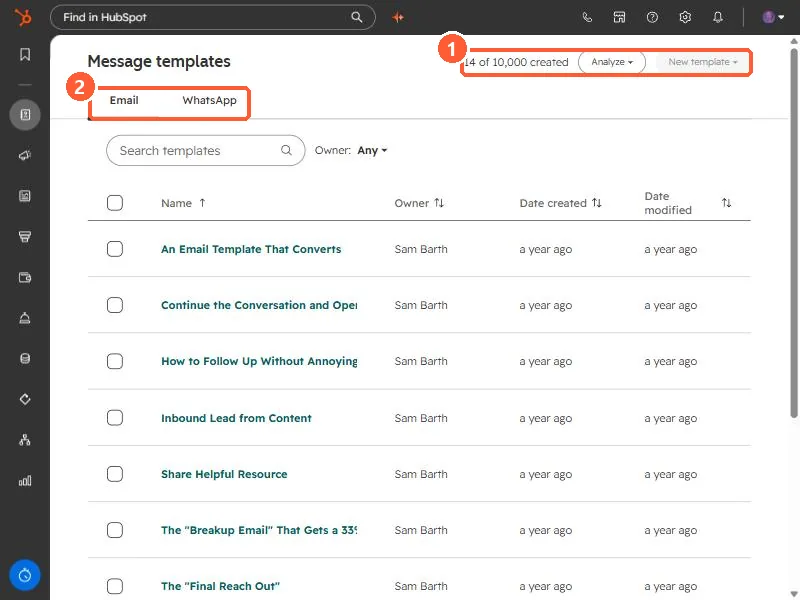
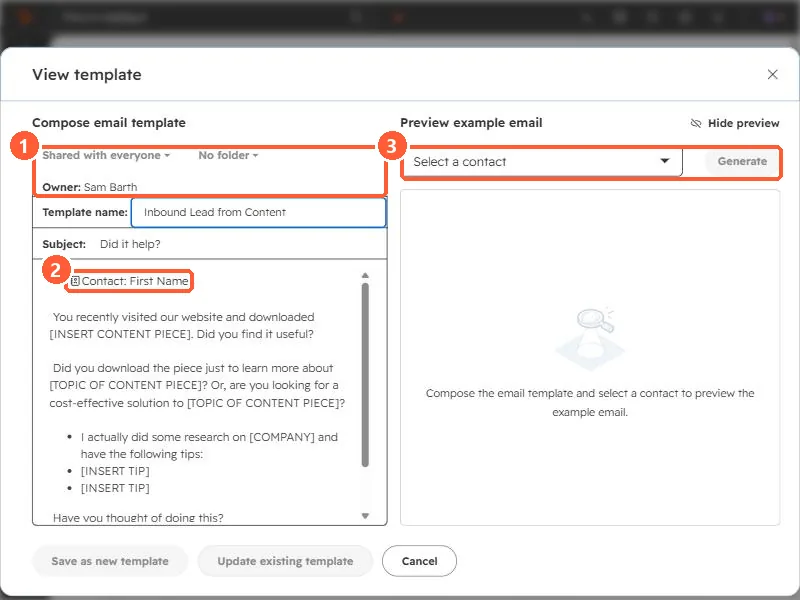

Short answer
Message templates are for one-to-one emails sent from a record, the conversations inbox, the help desk, or your inbox through the sales extension, and can be added to sequences. Each has a name, subject, body, owner, sharing setting (shared with everyone or private), and folder. Use personalization tokens such as Contact: First Name. HubSpot fills the Template ID property on emails sent with a template, so you can report on which ones work. Free accounts created on or after September 18, 2024 get three templates.
1. The templates list
Open Message templates. My demo has 14 of 10,000 created. There are tabs for Email and WhatsApp, an owner filter, and an Analyze menu.


2. Inside a template
Click a template to open it.


- Sharing and folder. Shared with everyone or private, and a folder. HubSpot also lets you change sharing from the templates list.
- Tokens. The greeting uses a Contact: First Name token. The bracketed placeholders, such as [INSERT CONTENT PIECE], are for the rep to replace.
- Preview. Pick a contact to see the email as it would look for them.
The buttons at the bottom are Save as new template and Update existing template, so you can fork a template without changing the original.
3. Limits and measuring
- HubSpot says free accounts created before September 18, 2024 get five templates, and later ones get three. Without Sales Hub or Service Hub, users can only use the first three templates.
- Emails sent with a template get the Template ID property, so a custom report can compare templates.
- For short reusable paragraphs inside any email or note, use snippets.